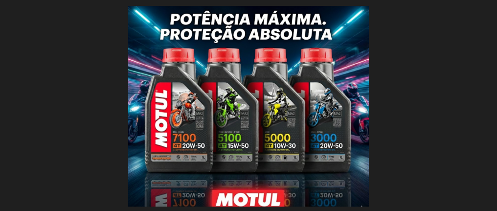
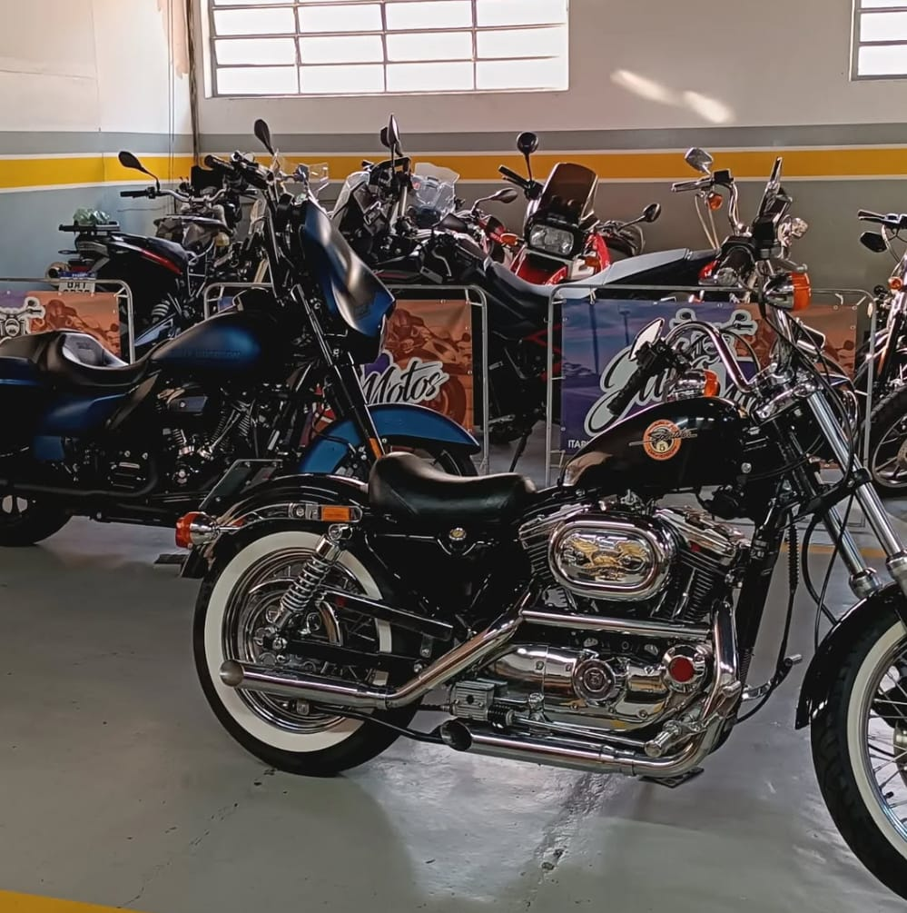
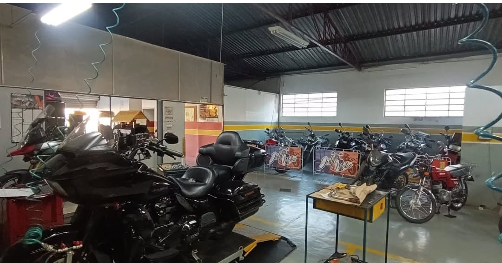
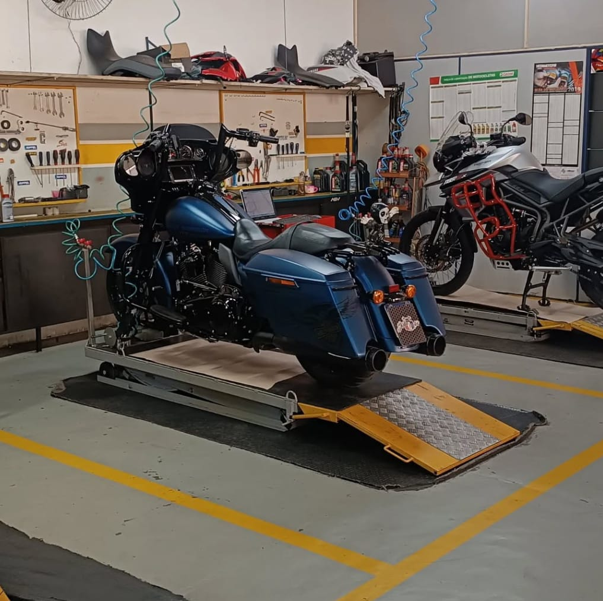

Rua Embaixador Pedro de Toledo, 85, Centro, Itapira-SP.
Entre em contato para agendamento: (19) 3843-5420, email: jumotos47@gmail.com

Nosso scanner de alta tecnologia TEXA Navigator TXB Evolution fará diagnósticos avançados em sua moto!

Somos uma oficina de motocicletas especializada em motos de alta cilindrada fazendo serviços para Itapira e região, fundada em 2001, com equipamentos, estrutura e conhecimentos profissionais, focamos em qualidade e extremo cuidado em sua moto, visando trazer o melhor serviço possível.